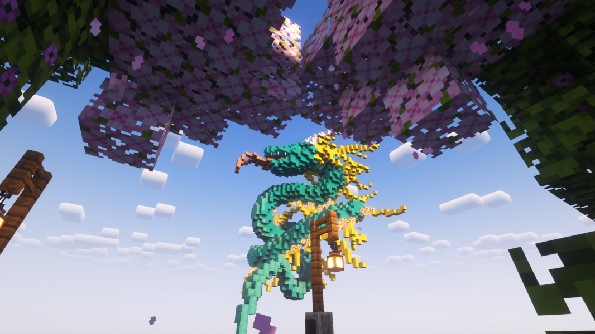
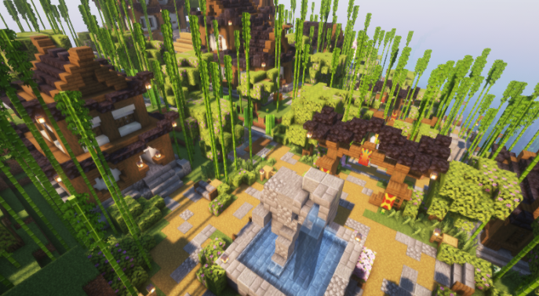
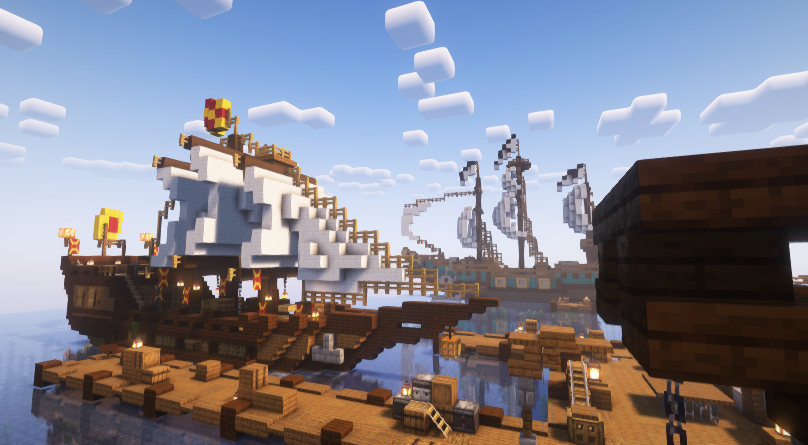
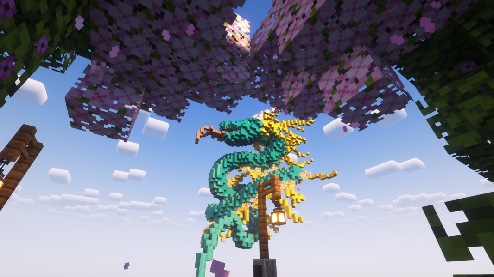
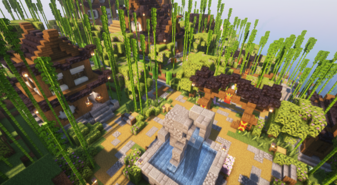
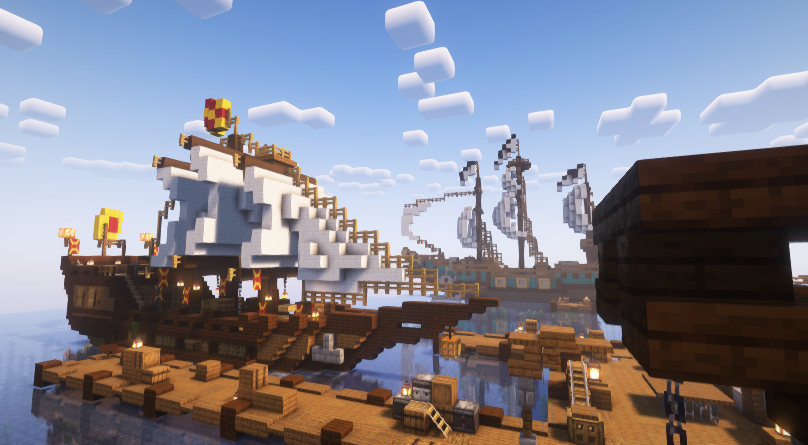

Как вступить в город?
Что-бы вступить в город нужно:
1. Вы должны играть на ZW4.
2. Вам нужно зайти в discord города.
3. Подать заявку на нашем сервере.
Правила
Глава 1. Политическая система СмЦР
Статья 1. Социал-монархическое Царство Рагадон есть социалистическое общенародное царство, выражающее волю и интересы рабочих, инженеров и рагов, трудящихся на благо всего царства.
Статья 2. Вся власть в СмЦР принадлежит Царю и народу. Царь согласовывая многие вопросы в Верховном Совете СмЦР и с самим народом, осуществляет управление царством.
Статья 3. Организация и деятельность Рагадонского народа строятся в соответствии с принципом социальной-монархии. Это значит что товарищи-рагадонцы трудятся на всеобщее благо и помогают друг другу во всём. Строят дружественные отношения.
Статья 4. Царские и общественные организации и должностные лица обязаны соблюдать Основной закон СмЦР.
Статья 5. Наиболее важные вопросы царства выносятся на всерагадонское обсуждение, а также ставятся на всенародное голосование.
Статья 6. Руководящей и направляющей силой СмЦР, является Верховный Совет СмЦР. Чтобы в него попасть - достаточно упорно трудится и показываться с лучшей стороны. Рагадонец с меткой "нуол" может стать частью совета в случае так называемой трудовой победы на ленью (тунеядством).
Статья 7. Коллектив Майордомов СмЦР и другие общественные организации в соответствии со своими уставными задачами участвуют в управлении царством и общественными делами, в решении политических, хозяйственных и социально-культурных вопросов.
Статья 8. Рабочие, инженеры, раги - участвуют в реализации общественных, хозяйственных и трудовых подвигов. ВС СмЦР не остаётся в стороне и направляет их, помогая также финансово во всех начинаниях.
Статья 9. Основным направлением развития СмЦР является распространение дружественных отношений со всеми. Ибо когда все едины и дружны, создавать прекрасное и получать удовольствие от процесса куда приятнее и лучше.
Глава 2. Экономическая идея СмЦР
Статья 10. Основу экономической системы СмЦР составляет общественная собственность. Все фермы рагадонцам! ВС СмЦР охраняет общественную собственность и создает условия для ее преумножения. Никто не вправе использовать общественную собственность в целях личной наживы и в других корыстных целях.
Статья 11. Все фермы добывают ресурсы на благо рагадонцев. На каждую из ферм выделяется 10 рабочих (для сбора ресурсов на общественный склад). Майордом Инженерии совместно с инженерами из комплекса, контролирует их работоспособность. Рагадонец который не состоит в списке собирателей ресурсов, ферму в целях сбора ресурсов посещать не имеет право!
Статья 12. Рагадонец имеет право на бесплатное жильё, доступ к общественном складу, на защиту со стороны царства если трудится и помогает остальным. Если рагадонец объявлен нуолом (лентяем), он может лишиться всех выше упомянутых благ.
Статья 13. Казна СмЦР пополняется всеобщими усилиями: Путём сборов в казну через конкурс "Весёлый Алмаз Шахтёра", простыми пожертвованиями. Налогов в СмЦР нет как таковых. Казна может пополняется путём штрафов, которые выписываются за нарушение общественного порядка, пример: Товарищ N взял ресурсы с фермы, не находясь в реестре данной фермы. В первую очередь он получит выговор, следом штраф (Начиная с 8 АР).
Статья 14. Казна СмЦР всеобщая и используется на финансирование тех или иных проектов, которые помимо рабочей силы требует и финансов. К примеру закупка ресурсов для строительства того или иного района. Также казна используется в качестве финансовых награждений. Награда за трудовые заслуги выдаётся АРами и другими ценными ресурсами, количество которых определяется трудовым подвигом рагадонца.
Статья 15. Заработную плату СмЦР не предусматривает, но назначает финансовую и имущественную поддержку новым товарищам, которые только вступили в СмЦР и уже во всю помогают. Бывалым трудягам назначаются награды за трудовые заслуги, в зависимости от их подвигов.
Глава 3. Социальное развитие и культура
Статья 16. СмЦР поддерживает проведение ивентов и по возможности финансирует их. Поддержка идет как динамичных мероприятий, так и интеллектуальных.
Статья 17. СмЦР стремится к творческому развитию граждан. Успехи в народном творчестве не остаются без внимания и всячески поддерживаются и расширяются Верховным Советом СмЦР.
Статья 18. СмЦР только за автоматизацию добычи ресурсов путем создания ферм и упрощения создания проектов во всех отраслях труда.
Статья 19. СмЦР стремится к повышению знаний истории, искусства и языка самого царства. Данная отрасль отражает индивидуальность граждан по отношению к другим объединениям. Одна история, один язык - единое общество!
Статья 20. СмЦР против любого рода токсичности. Обман, клевета, разжигание ненависти, провокация, оскорбления, буллинг, NFSW-распространение и все то, что приносит моральный и не только вред товарищу-рагадонцу - запрещено и наказание начинается с выговора и вплоть до суда. Запрещена бранная лексика в текстовом чате дискорда и не только.
Статья 21. Все конфликты граждан решаются в первую очередь внутри СмЦР, в крайнем случае - на самом сервере. В ином случае оба или более участников конфликта попадают под штраф (Начиная с 16 АР). Давайте не будем показывать свои конфликты всем и решать их вместе!
Глава 4. Регулировка конфликтов и нарушений в СмЦР
Статья 22. В СмЦР существует 3 вида наказаний и изгнание:
- Выговор (Может будет выдан в неформальной обстановке и представляет собой устное предупреждение, в дискорде также используется мут)
- Штраф (Может будет выдан в неформальной обстановке)
- Исправительные работы (Назначаются судом и представляют собой принудительные работы, в ходе которых от товарища потребуется добыть или выполнить то действие, которое никак не будет относиться к трудовому подвигу, а лишь отработкой своей вины)
- Изгнание (Назначается судом и представляется в виде полного требования покинуть территорию СмЦР. Изгнанник более не является нашим товарищем!)
Статья 23. "Что не доказано, не важно что сказано!" Если вы обвиняете того или иного человек в совершённом им негативным действием, предъявите док-ва. В ином случае ваше обращение будет расцениваться клеветой. Что не подтверждается существенным материалом (Видео, аудио и скрин-записью), является клеветой или ложью, что карается изначально штрафом (Начиная с 12 АР).
Статья 24. Если товарищ многочисленное количество раз вызывает негативные эмоции, создаёт помеху рагадонцам и всяческие проявляет токсичность или любую другую плохую черту, коллектив который от него пострадал могут подать на него в суд. Суд СмЦР в праве принять данную заявку, только в случае правильного оформления заявки, по следующему примеру:
- Кто подает заявку? (Перечисление списка подающих, если их более двух)
- На кого подаётся? (Кто обвиняется)
- Причины и доказательства. (Сама причина и скрины, видео, аудио и всё то что является вещественным доказательством)
Майордом закона или Царь в случае нехватки доказательств в заявке, могут отказаться проводить суд.
Статья 25. В случае затяжных конфликтов и пассивной агрессии сторон, участники подобного мероприятия могут подвергаться штрафами до тех пор, пока не решат свой конфликт самостоятельно или в суде. Штраф в таком случае начинается с 16 АРов.
II. РАБОТА ЦАРСКИХ ПОСТОВ И ПРОЧИЕ ДОПОЛНЕНИЯ
Глава 5. Структура управления и защита территорий
Статья 26. Территория принадлежащая СмЦР утверждается всенародным голосованием и соответствующими границами, в рамках которых проживают рагадонцы. В-первую очередь выбранная граница, не должна нарушать чей-либо суверенитет и быть удобной для товарищей из СмЦР. Изменения касательно территории решаются всенародным голосованием.
Статья 27. Территория принадлежащая СмЦР защищается боевой единицей - рагом. Майордом реализовывает внешнюю и внутреннюю охрану границ СмЦР. Территория внутри СмЦР делится на районы со своей стилистикой и управлением.
Статья 28. Управление в районе осуществляет район-глава, который находится в составе ВС СмЦР. Выше район-главы могут быть только Майордома и сам Царь. Если проживающих что-либо не устраивает, может объявиться районное голосование в газете. Его по согласования с ВС СмЦР выдвигает район-глава.
Статья 29. Управление всей территорией осуществляется Верховным Советом СмЦР и все указы, реформы, финансирования в рамках границы осуществляется им же.
Статья 30. В случае чрезвычайного положения, а именно: внешней угрозы (угроза которая не исходит из СмЦР), внутренней угрозы (угрозы исходящей из СмЦР и имеет масштабный характер) и любой угрозы, которая угрожает территории и народу СмЦР, может случится объявление о военном положении, которое сопровождается всеобщей мобилизацией и разворачиванием Рагов у границ или в столице СмЦР (Столицей является район в котором располагается всеобщий склад и здание ВС СмЦР). В крайнем случае поднимается весь народ на защиту Рагадона и устранение угрозы.
Глава 6. Верховный Совет СмЦР
Статья 31. В ВС СмЦР может попасть лишь самые трудовые товарищи. В зависимости от сферы деятельности, идей и характерных черт его могут поставить на самые разные варианты постов Майордомов. Бывают Майордома: Труда, Инженерии, Просвещения, Рагов и самый значимый - Закона. Подробнее о каждом из них есть ниже:
О Майордоме Рагов:
В случае каких-либо военных конфликтов, либо угроз. Является основным главнокомандующим Рагов. В обычное время, Раги и сам Майордом выступают как правоохранительный орган на территории СмЦР, решение небольших чрезвычайных нарушений мгновенно оставляет за собой. От лица стражей порядка идёт выписка штрафов за то или иное нарушение.
О Майордоме Закона:
Следит за исполнением норм основного закона СмЦР, является по совместительству судьёй и редактором закона. Под исполнением норм, является урегулирование конфликтов которые дошли до суда.
О Майордоме Инженерии:
Ведёт составляющую всех авто, полуавто и другого рода ферм в СмЦР. В его задачу входит поддержание ферм, проверку соблюдения отчётности на фермах и списка доступа, а также планировка созданий всех ферм, которые в дальнейшем потребуются рагадонцам.
О Майордоме Просвещения:
Само слово "Просвещения" даёт понять, что он должен посвящать рагадонцам новости, рассказывать о истории и создавать творческие ивенты. Он является самым активным из Майордомов, на его активность должны равняться все остальные.
О Майордоме Труда:
Ведёт основную группу рабочих, за исключением инженеров. Руководит строительством в СмЦР, проводит ревизию склада, поддерживает и помогает рабочим в тех или иных вопросах.
Статья 32. Требования для нахождения на посту Майордома:
- Умение руководить, в рамках разумного
- Работать бескорыстно и по совести
- Жить в СмЦР достаточно долго
- Иметь навыки в той сфере, в которой руководит
- Быть ответственным на работе
Статья 32.2 В случае не соблюдения или пренебрежения выше перечисленного в статье выше - товарищ покидает пост М/а.
История Рагадона
История Рагадона началась после долгого застоя на LampWorld у Алмасийской Империи. Намбер, находящийся на посту Герцога, принимает решение уйти и создать своё государство со своей историей. Вот так и появился в свет, Рагадон.
История Рагадона с абсолютной монархией началась 29 Мая, 2022 года. Именно в этот день Намбер основал его в мире LampWorld, при этом покинув Алмасийскую Империю (До вступления в состав Аларийской Империи, император Дарк предлагал вступить в боевой альянс, но получал отказ). Первыми "коренными" жителями, между которыми в дальнейшем были многочисленные конфликты, были: Фокс, Kenanbanan, Пионер, Never и соответственно сам Намбер, до начала лета 2022 года, был подписан союз с Кото - Лэндом. Спустя недолгое время, приблизительно 14 Июня 2022 года объявился смутный человек, что написал неизвестные подтверждению координаты земли Пандемонии. Он предложил их использовать в целях грифа, но получил отказ, поскольку это нарушало правила LampWorld, как и не готовую внешнюю политику с другими государствами, которую уже испортило появление Пионера в Рагадоне. Данная персона нарушила закон Панд-Ратонский и покинула гос-во, попав в Рагадон и в дальнейшем вызвала проблемы между отношениями Рагадона и Панд-Ратонской Империи. Затем начались конфликты между Never(ом) и Kenanbanan(ом), второй умудрился создать вторую личность для грифа. В конечном итоге обе личности были как забанены, так и изгнаны из Рагадона.
Следующими новыми игроками становятся Кэри и ГэлэксиНайк, а следом 7 Июня 2022 года в Рагадон заносит Дрона, личность что начала заниматься политическими делами прямо с ходу и помогает Рагадону стать автономией Аларийской Империи. Он разрабатывает систему "Облава", во времена Районглав и Районов в Рагадоне (Фарк и Чертон, по которым распределялись игроки по месту жительства). Затем появляется трудолюбивый Рагадонец Аркадий, во времена создания Раг (Боевых единиц) и Рабочих с выбором класс занятости, затем уже в Июле 2022 года начинается новых приход Рагадонцев - Сизар что в дальнейшем построит лучший порт и его друг инженер Кьюверти.
Далее начинается дипломатическое налаживание с Панд-Ратонией, а конкретно выплата вместо Пионера, штраф в размере 24 АБ, поскольку Император Батрич считал что Намбер "упрятал" нарушителя в Рагадоне. За 1-2 дня и 16 Июля 2022 года совместными усилиями был выплачен штраф, вопрос по которому поднял Дрон. В то же время Пионер покидает Рагадон. 29 Июля 2022 года появляется игрок Барсум, что также сыграет не малую роль в развитии Рагадона как и Сфг вступивший 28 Августа 2022 года.
На момент 29 Сентября 2022 Года, был 4 сезон LampWorld, в ходе которого как раз в этот день случился массовый откат и потеря активности Рагадонцев и в попытках поднятия его вновь, был создан клан в игре Clash of Clans, такие действия были аналогичны Аларийским. Клан просуществовал до тех пор, пока актив не вернулся.
После же долгого перерыва, к нам также возвращается Дрон и устраивает скандал по поводу того, что Рагадон просто "находился в состоянии АФК" и покидает его, вступая в состав граждан Аларийской Империи. Несмотря на всё происходящее, новым советником становится Тига, который пробыл не долгое время, а следом становится тот самый Барсум, что помогает в большинстве вопросов касательно Рагадона. 25 Февраля 2023 Года, когда LampWorld не исполнилось и года, Намбер покидает Рагадон в связи закрытием проекта что был на Bedrock и основывает Бумбу на платформе Java.
После ухода Царя, Рагадон пришёл в упадок и на протяжении 25.02 - 3.08, 2023 Года, был в ужасном состоянии. И как раз 3 Августа 2023 Года началось восстановление Рагадона, в связи с прибытием Намбера и его теперь уже готовым, кроссплатформенным проектом Бумба. Рагадон переходит на новый проект к нему подключаются новые люди, как новые видоизменение общего дискорд сервера и из абсолютной монархии, Царство Рагадон становится Социальной - монархией. Игрок Рома Кастыль объявлен первым зложелателем Рагадона.
С 8 по 10 Декабря 2023 Года, стартуют полноценные реформы и начала новой страны: Социал - монархическое Царство Рагадон. Вместо классических постов и должностей, утверждаются Майордома Культуры и Труда которые избираются раз в месяц, а вместо разделения между рабочим классом и боевыми единицами, устанавливается уточнение действительных рабочих мест:
- Разнорабочий
- Инженер
- Строитель
- Раг
- Архитектор
- Добытчик
Также происходит указ от лица Верховного Совета СмЦР, по переименованию и утверждению новейшего флага, ознаменовавшего смену политики в Рагадоне полноценно, на должность Майордома Труда выходит Сфг, а на посту Майордома Культуры также остаётся Фокс, поскольку должность МК была создана до официальных реформ и соответственно до 1 Января 2024 года они остаются до окончания своего срока. Выборы проводятся свободно и между Рагадонцами, без каких-либо фальсификаций.
Во время реформ, были проведены также переименование разделов и сокращения каналов в дискорд сервере. Всё подтверждается новыми видами вестей - указами.
14 Января 2024 года была закончена стройка города "Бокофградэ", жителей расселили по квартирам, также была изменена политику Майордомов - теперь они не переизбирались на новый срок. С поста Майордома Культуры в последствии был снят товарищ Фокс и через некоторое время прошла чистка, из-за которой СмЦР покинули по причине АФК: Скик, Ганя, Слава и др. Фокс был изгнан за токсичность и анти-трудовую деятельность.
8 Марта 2024 года стартовало межсезонье на БУМБе, в котором себя прекрасно проявили игроки Сфг, Крейт, Владик, но 1 Апреля закрывается и межсезонье, и сам проект на N время. Поэтому 1 Апреля, в этот же день весь Рагадон уходит на ZeroWorlds и начинает там свою деятельность.
Появляется много новых граждан с конца Марта по 11-е Апреля, а именно: Кабалаб, мини-пипи, КиберКэт, Шелд, Ливер, МатерТен, Видикс, Уча, Мэйно, Беов, Санта, Марсунг. Именно с этих товарищей началась новая эпоха жизни Социал-монархического Царства Рагадон в 2024 году. Для поддержки казны переделывается "Весёлый Алмаз Шахтёра" и соответственно проводится 13/14 Апреля 2024 года.
Победителем второго ивента по сбору АРов в казну, стал новый игрок - Киловат. В дальнейшем также были похороны новоприбывшего - КиберКэта (13.04.2024), игрока, благодаря которому был начат отличный старт СмЦР на ZeroWorlds.
Кроме того, из идей Шелда и МатерТена СмЦР был поделён на районы, каждый из которых имел свой стиль. 15 Апреля 2024 года Сфг и Крейт меняются постами Майордомов для улучшения производительности и контроля игроков. 17 Апреля, выходит указ #6 в котором было указано распределение людей на посты район-глав.
У СмЦР был насыщенный период нахождения на ZW и в виду возможностей, 28 Апреля СмЦР официально признают и выходит новый, официально подтверждённый гимн Социал-монархического Царства Рагадон.
На посты Майордомов выходят товарищи: Тимес (Инженерии), Киловат (Просвещения по совместительству с Сфг), Скью (Закона), Хайтекс (Рагов) в период с 1 по 4 Мая, а 6 числа выходит указ #7 ознаменовавший созданий официальных паспортов СмЦР, которые удостоверяли бы личность каждого из рагадонца. И к сожалению из-за отсутствия Намбера в виду экзаменов, в Рагадоне наступает период новой ругани между согражданами. Скью, Грек и многие другие либо покинули земли ZW, либо были забанены. И начиная с 3 июня 2024 года утверждается полный и изменённый Основной закон СмЦР, который содержит в себе 32.2 статьей и редактируются исходя из всенародного голосования. Многое теперь решается народом.
Кто создал сайт?
discord: cabalaba_1212
minecraft: CABALABA.
 




